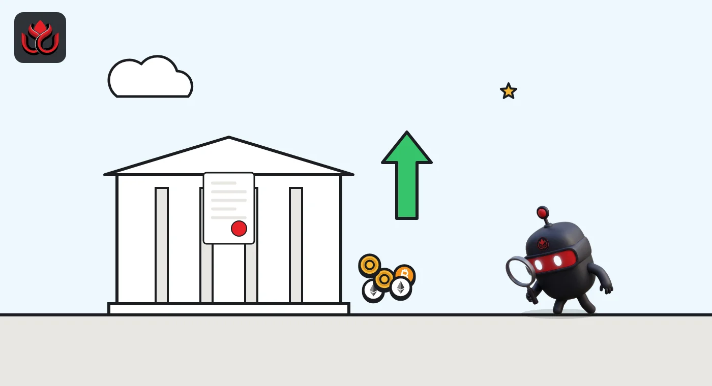
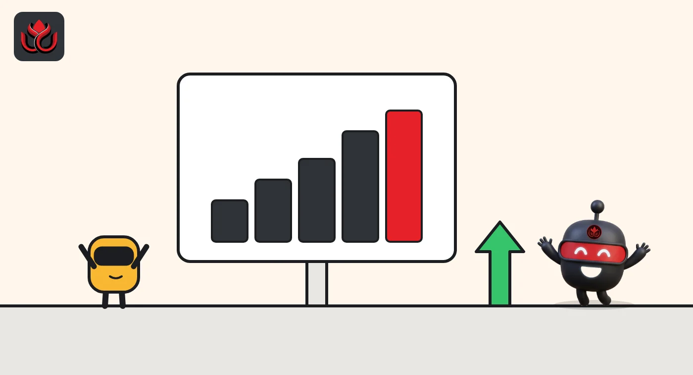

Could Americans trade crypto with leverage at home? The CFTC opens a 60-day consultation
With the CLARITY Act stuck in the Senate, the CFTC on October 5 asked the public how to regulate retail crypto trading on borrowed money at federally registered exchanges. Comments are due around December 12, and nothing is binding yet.
Key points
- On October 5, 2026, the CFTC started work on rules that would let registered US exchanges offer retail crypto trading with leverage or on credit.
- Exchanges would get an optional federal "crypto asset market" status instead of relying on state licenses. Comments are due around December 12, 2026.
- Chairman Michael Selig says the CFTC cannot force crypto onto its platforms without Congress, and tied the move to the stalled CLARITY Act.
What the CFTC did
On October 5, 2026, the Commodity Futures Trading Commission (CFTC), the US derivatives regulator, asked the public how it should regulate retail crypto trading done with leverage. It did so in an advance notice of proposed rulemaking (ANPRM), an early step where an agency shares its thinking and asks for input before drafting a rule.
The notice covers retail commodity transactions involving crypto assets, which the CFTC calls CTXs, under section 2(c)(2)(D) of the Commodity Exchange Act, the CFTC said.
That section of the law matters because it covers leveraged, margined or financed trades with retail customers. In simple terms: buying crypto with borrowed money or on credit, rather than paying in full.
The notice was published in the Federal Register on October 13, 2026, (91 FR 64811). Written comments are due within 60 days of that date, which points to about December 12, 2026, and will be posted on Regulations.gov. Chairman Michael Selig said Americans "deserve clarity, certainty, and consumer protections" in crypto markets. He said the aim is to prevent fraud rather than only prosecute it afterward, citing FTX.
The two rulebooks it is sketching
The notice lays the groundwork for two possible rule sets, "Regulation Crypto Asset Transactions" (Regulation CTX) and "Regulation Crypto Asset Markets" (Regulation CAM). According to the CFTC release, the main ideas are:
- Preventing abusive practices in crypto markets and CTXs under one national regime.
- Sharing crypto-specific guidance on what the CFTC sees as best compliance practice.
- Creating a formal "crypto asset market" as a subcategory of designated contract market (DCM) registration. A DCM is a federally registered exchange, the same status held by major futures exchanges.
The CFTC said it will use the comments to decide on possible future action, such as a formal rulemaking. Nothing in the notice is binding yet.

Why Selig says it is needed
The same day, Selig set out his case in an opinion piece for the Wall Street Journal, which the CFTC posted on its website. He argued that regulators in the past chose to regulate through enforcement rather than clear rules, and that crypto firms left the US as a result. He pointed to FTX, whose founders misused about $8 billion in customer funds. FTX, BlockFi and Voyager all ran their US businesses through units holding state money transmitter licenses, rules he said were built for payment firms, not financial markets.
His summary of that period was blunt: "The last chapter of crypto regulation was written by crisis."
Selig said the framework would be optional. Registered exchanges could offer retail clients trading on a margined, leveraged or financed basis, which he set apart from ordinary spot buying. He also said the rules would not force crypto onto CFTC platforms, because the agency lacks that power without Congress. He tied the timing to the Senate's failure to advance the CLARITY Act, the market structure bill the industry had backed.
Perpetual futures get a path too
On the same day, the CFTC's Division of Market Oversight granted no-action relief letting designated contract markets remove the expiry dates on existing perpetual-style broad-based security index futures and convert them into true perpetual futures. Conditions included asking holders of open positions for feedback, giving advance notice and a chance to exit, providing risk disclosures and leaving other contract terms unchanged, the CFTC said. The relief, granted in Staff Letter 26-29, ran until October 20, 2026.
Perpetual futures, or perps, are contracts that never expire. They are the most traded product in crypto derivatives, mostly on offshore venues, so a US path for them matters to the same exchanges that would use the new crypto asset market category.

Other CFTC crypto moves this fall
The ANPRM is one of several crypto steps at the CFTC this fall. On September 24, 2026, staff updated their FAQs on crypto activities by registrants, adding answers on putting customer funds into tokenized versions of permitted investments and on using blockchains for recordkeeping. Selig tied the update to the agency's efforts to "provide regulatory clarity for the crypto industry." The original FAQs, from March 20, 2026, build on staff letters on tokenized collateral and on digital assets accepted as margin.
On October 28, 2026, the agency announced a public roundtable on 24/7 trading, to be held on December 15 at its Washington headquarters, covering overnight trading, tokenization, infrastructure and staffing, and operational readiness. Crypto markets already trade around the clock, while most US futures markets do not. Selig said "the CFTC will not take a one-size-fits-all approach to 24/7 trading."
Selig's op-ed also referred to a joint CFTC and SEC conclusion earlier this year that bitcoin and ether are non-securities, which is why the CFTC sees itself as the main federal regulator for trading in those assets.
Timeline
CFTC releases the crypto ANPRM; Selig op-ed posted
CFTC staff no-action relief on perpetual-style index futures
ANPRM published in the Federal Register (91 FR 64811)
Perpetual futures no-action relief expires
60-day comment period ends
CFTC roundtable on 24/7 trading
LC Insight analysis
This section is our reading of the facts above, not a statement of fact.
- We think the real prize is leverage. US traders who want to trade crypto on margin mostly go offshore today. A federal exchange path could bring some of that business home under US rules.
- Do not expect new products soon. An ANPRM comes before a proposal, and a final rule needs more rounds of comment. This is a 2027 story at the earliest.
- The fight to watch is with the states. One national regime for leveraged crypto would undercut state money transmitter licenses, and states are already battling the CFTC over prediction markets.
What's next
- Comment letters filed before the deadline around December 12
- Positions taken by large exchanges and state regulators
- The December 15 roundtable on 24/7 trading
- Whether the CFTC moves to a formal proposal in 2027
Disclaimer. This article is based on public information and the sources listed below as of the update time shown. It is for information only and is not investment, legal or tax advice. Figures may change as companies and authorities publish new data.